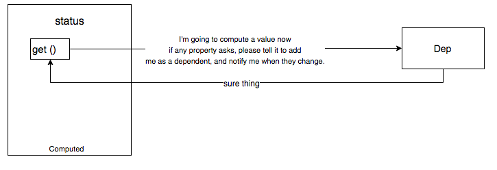
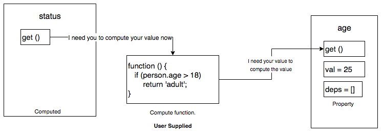
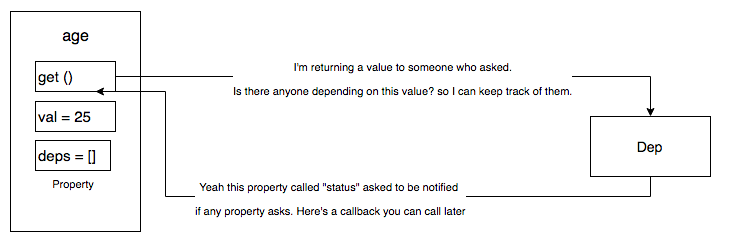
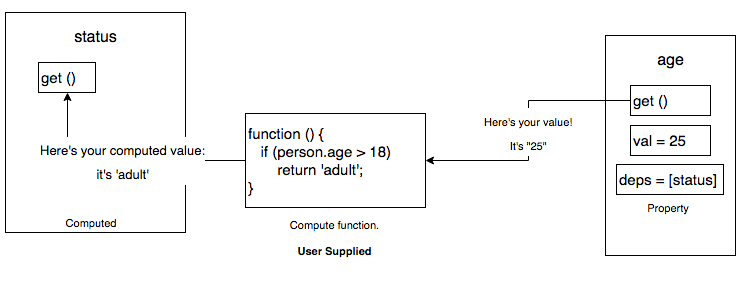

原文链接:Vue.js Internals: How computed properties work
译文开始:
在这片文章中，我们将会通过写一个极其简单的实现达到同样的功能来学习在Vue.js中计算属性是如何工作的。
1.这只是用来说明它如何工作。不讨论对象，数组，监听以及存在于Vue核心中的性能优化。
2.我在阅读Vue源码之后写了这篇文章，基于我非常有限的理解。可能有很多地方有问题。若你发现了问题请email我。
JS属性
JS中有一个特性 Object.defineProperty。他可以做相当多的事情但是我们在这里只关注一点:
1 2 3 4 5 6 7 8 9 10 11 12 13 14 15
| var person = {}; Object.defineProperty (person, 'age', { get: function () { console.log("Getting the age"); return 25 } }) console.log("The age is : ", person.age) *"Getting the age" *"The age is " *25 */
|
尽管person.age看起来只是我们在访问对象属性，但是我们在其内部执行了一个函数。
一个Vue.js监听雏形
在Vue.js中有一个基本的结构可以帮助你将一个普通对象转换为一个可观测的值，叫做observable。下面是如何添加reactive property精简版本代码:
1 2 3 4 5 6 7 8 9 10 11 12 13 14 15 16 17 18 19 20 21 22 23
| function defineReactive (obj, key, val) { Object.defineProperty (obj, key, { get: function() { return val; }, set: function(newValue) { val = newValue } }) }; var person = {}; defineReactive(person, 'age', 25); defineReactive(person, 'country', 'Brazil'); if(person.age < 18) { return 'minor' }else { return 'adult' } person.country = 'Russia'
|
有趣的是,真正的值25和Brazil依旧在闭包变量val中并且当你设置值的时候被修改。person.country不包含真正的值,而getter函数闭包包含那个值
定义一个计算属性
让我们来创建一个用来定义计算属性defineComputed的函数。
1 2 3 4 5 6 7 8 9 10 11 12 13 14 15 16 17
| defineComputed ( person, 'status', function () { console.log('status getter called') if(person.age < 18) { return 'minor' }else { return 'adult' } }, function (newValue) { console.log('status has changed to', newvalue) } ); console.log('the person's status is', person.status)
|
先写一个defineComputed的简单实现。支持调用计算函数，但目前还不支持更新回调函数
1 2 3 4 5 6 7 8 9 10 11
| function defineComputed(obj, key, computeFunc, updateCallback) { Object.defineProperty(obj, key, { get: function() { return computeFunc(); }, set: function() { } }) }
|
存在几个问题:
1.每次访问属性都会调用计算函数
2.不清楚何时更新
增加一个依赖追踪器
我们来增加一个叫做Dep的全局对象
1 2 3
| var Dep = { target: null }
|
这就是依赖追踪器。让我们来修改下defineComputed:
1 2 3 4 5 6 7 8 9 10 11 12 13 14 15 16
| function defineComputed (obj, key, computeFunc, updateCallback) { var onDependencyUpdated = function () { } Object.defineProperty (obj, key, { get: function () { Dep.target = onDependencyUpdated; var value = computeFunc (); Dep.target = null; }, set: function () { } }) }
|
如何定义reactive property？
1 2 3 4 5 6 7 8 9 10 11 12 13 14 15 16 17 18 19 20 21 22 23 24
| function defineReactive (obj, key, val) { var deps = []; Object.defineProperty (obj, key, { get: function () { if (Dep.target && ) { deps.push (target); } return val; }, set: function (newValue) { val = newValue; deps.forEach ((changeFunction) => { changeFunction (); }); } }) };
|
总结:
Step1:

Step2:

Step3:

Step4:

JS Bin示例